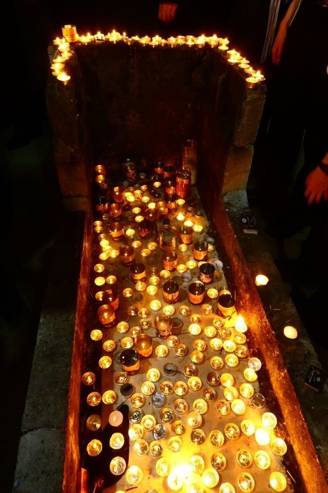
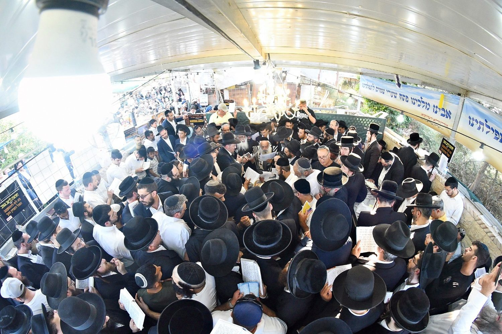
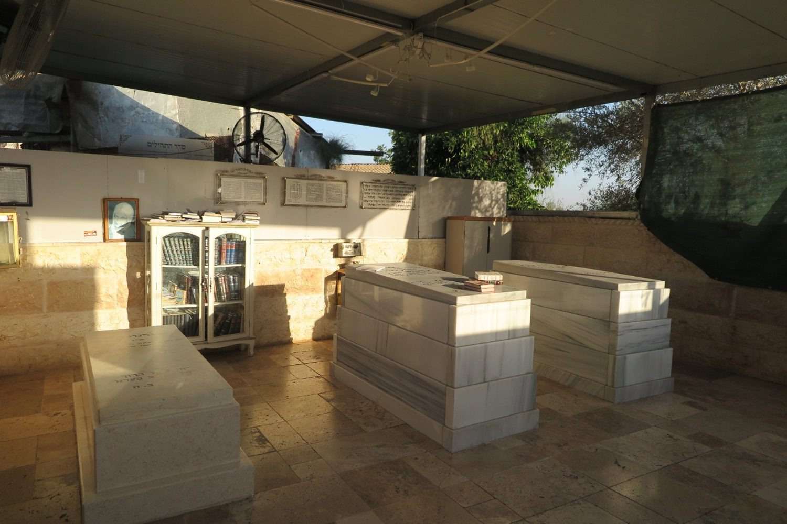
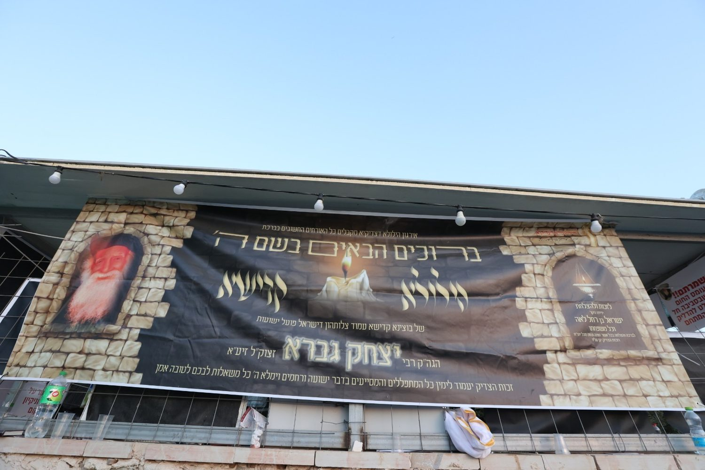

סגולה לרפואה
תפילה על הציון לרפואה שלמה בגוף ובנפש, לכם וליקרים לכם.
✦ האתר הרשמי · ציון הצדיק ✦
מקור של ברכה, ישועה וסגולה · זכותו תגן עלינו ועל כל ישראל
„צַדִּיק בֶּאֱמוּנָתוֹ יִחְיֶה — וְצַדִּיק יְסוֹד עוֹלָם" זכות הצדיק תעמוד לכם ולכל בני ביתכם לטובה ולברכה
תולדות הצדיק
רבי יצחק בן יצחק גברא זצ״ל היה הדור השבעה-עשר בשושלת רבני משפחתו — שושלת שהנהיגה את קהילת אסוואד שבתימן (צפונית-מערבית לצנעא) למעלה מאלף שנה ברציפות. בקיאותו נודעה בשערים: ששת סדרי המשנה וספר משנה תורה להרמב״ם היו שגורים על לשונו, והוא סיים את ספר תהילים עשרים ושש פעמים מדי שבוע. שימש כמוהל ומל מאות תינוקות, והיה בקי בקבלה מעשית שקיבל במסורת מחכמי תימן.
בשנת תש״ט (1949) עלה לארץ ישראל יחד עם בני קהילתו, ולאחר מסע נדודים ארוך התיישבו בכפר עג׳ור הסמוך לבית שמש. נסתלק לגנזי מרומים בכ״א בתמוז תש״י (1950), וציווה להיטמן בחצר ביתו. מאז ועד היום נודע כ׳פועל הישועות מעג׳ור׳, מפורסם בניסים בחייו ולאחר מותו — ורבים פוקדים את ציונו ורואים ישועות גדולות.
הידעת?
שושלת בת אלף שנה. שש-עשרה דורות רצופים של רבנות בכפר אסוואד שבתימן.
בקיאות שאין כמותה. ידע בעל-פה את ששת סדרי המשנה ואת ספר משנה תורה להרמב״ם.
עשרים ושישה סיומי תהילים בשבוע. מלבד סדר לימודו הקבוע מדי יום.
ענווה וחסד. נודע בענוותנותו הגדולה ובמעשי החסד שלו לנזקקים.
הציון הנסתר. מקום מנוחתו לא היה ידוע שנים רבות, מכוסה בצמחייה ליד עץ חרוב.
התגלות בחלום. אישה זקנה מבני המקום חלמה שהצדיק מבקש לטפח את ציונו — וכך התגלה הקבר.
נר שלא כבה. מסופר שנרות שמן על הציון בערו מ׳שבת לשבת׳ מבלי שיכבו.
מפורסם בניסים. ישועות רבות — בפרט בזיווג ובפרי בטן — נראות בזכותו על הציון.
בזכות הצדיק
מסרו את שמכם ושם אמכם בתפילה על הציון — ובקשו על כל מה שלבכם חפץ.
תפילה על הציון לרפואה שלמה בגוף ובנפש, לכם וליקרים לכם.
זכות הצדיק לפקידת זיווג הגון במהרה ובשמחה.
פתיחת שערי שפע, ברכה והצלחה בכל מעשי ידיכם.
תפילה ובקשה לזרע של קיימא, לבנים ובנות צדיקים.
ברכה להצלחה בלימודים, בעבודה ובכל הדרכים.
זכות הצדיק לשמירה מכל רע, לכם ולכל בני ביתכם.
יום קדוש
מדי שנה, בכ״א בתמוז, נאספים אלפים לציון בעג׳ור — להשתטח, להדליק נרות ולבקש ברכה. הצטרפו אלינו, או שלחו את שמכם לתפילה.
ההילולא הקרובה · כ״א בתמוז תשפ״ו · יום שני, 6 ביולי 2026
לא יכולים להגיע לציון? מסרו שם לתפילה והיו שותפים בהוצאות ההילולא — וזכות הצדיק תגן עליכם.
מהשטח
אלפי יהודים ראו ישועה בזכות הצדיק. אלה רק כמה מהם.
שתי נשים בהיריון חלו בקורונה ומצבן הידרדר. לאחר תפילה על הציון והבטחה לקרוא לבנים על שם הצדיק — שתיהן החלימו וילדו בנים בריאים, ושניהם נקראו יצחק.
בחור ספורטאי נכנס לציון נשען על מקל הליכה לאחר תאונה. לאחר ששפך את לבו בתפילה — קם, השליך את המקל ויצא בלעדיו. כעבור חודשים העיד שהחלים לגמרי.
אישה שנתבעה על חוב גדול לעירייה הניחה את מסמכיה על הציון וביקשה מהצדיק שיהיה לה לפרקליט. כשהגיעה לשלם — לא נמצא כל רישום של חוב על שמה.
* מתוך סדרת "פועל הישועות מעגור" באתר המאורות.
מהציון וההילולא
רגעים מהילולת הצדיק בציון שבעג׳ור — לאורך השנים.

הדלקת נרות
המוני בית ישראל
ציון הצדיק
הציון בלילה* תמונות מהילולות בעג׳ור לאורך השנים.
לפני הבקשה
„רִבּוֹנוֹ שֶׁל עוֹלָם, בִּזְכוּת הַצַּדִּיק הַקָּדוֹשׁ רַבִּי יִצְחָק בֶּן יִצְחָק גַּבְּרָא זְצוּקַ״ל הַטָּמוּן בְּעַגּ׳וּר, יְהִי רָצוֹן מִלְּפָנֶיךָ שֶׁתִּשְׁמַע אֶת תְּפִלָּתֵנוּ, וְתִפְקֹד אוֹתָנוּ בִּרְפוּאָה, בִּישׁוּעָה, בְּפַרְנָסָה טוֹבָה וּבְשִׂמְחָה, אָמֵן."
נר אחד מאיר עולם שלם. הדליקו נר לזכר יקיריכם או לרפואת חולה — ואנו נדליק אותו על הציון.
להדלקת נר »שאלות נפוצות
נשמח לשמוע
לכל שאלה, בקשת ברכה או מסירת שם לתפילה — אנחנו כאן בשבילכם.
איך מגיעים: מכביש ירושלים–תל אביב פונים לכביש 38 לכיוון בית שמש; לאחר צומת האלה עוקבים אחר השילוט לעג׳ור. עם הכניסה למושב פונים ימינה, ובצומת ה‑T שבסוף הרחוב שוב ימינה — וכעבור כ‑100 מ׳ הכניסה לציון משמאל.